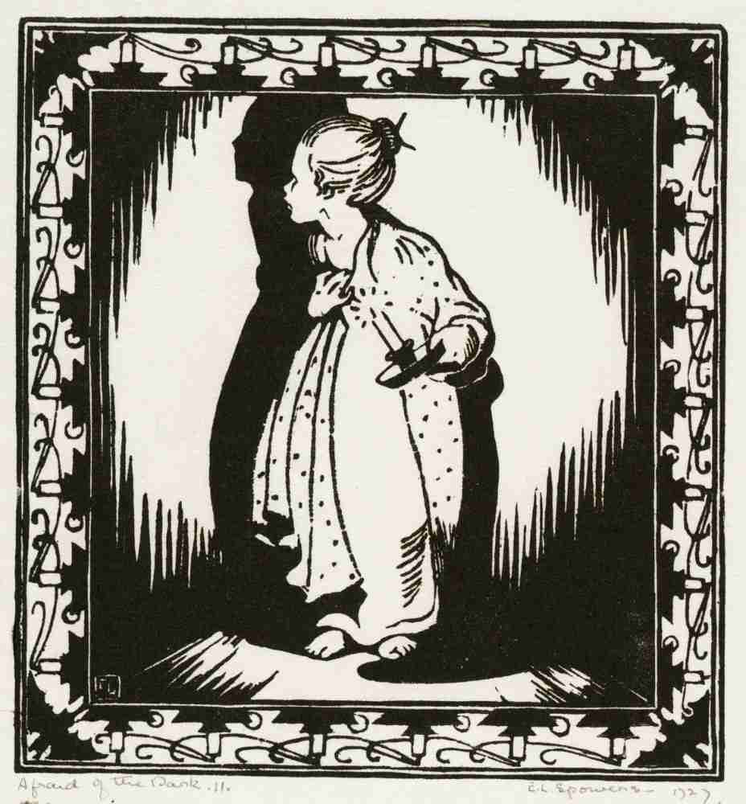

Ecclesiastes 1:13-18
And I set my heart to seek and search out by wisdom concerning all that is done under heaven; this burdensome task God has given to the sons of man, by which they may be exercised. I have seen all the works that are done under the sun; and indeed, all is vanity and grasping for the wind. What is crooked cannot be made straight, And what is lacking cannot be numbered. I communed with my heart, saying, “Look, I have attained greatness, and have gained more wisdom than all who were before me in Jerusalem. My heart has understood great wisdom and knowledge.” And I set my heart to know wisdom and to know madness and folly. I perceived that this also is grasping for the wind. For in much wisdom is much grief, And he who increases knowledge increases sorrow.

